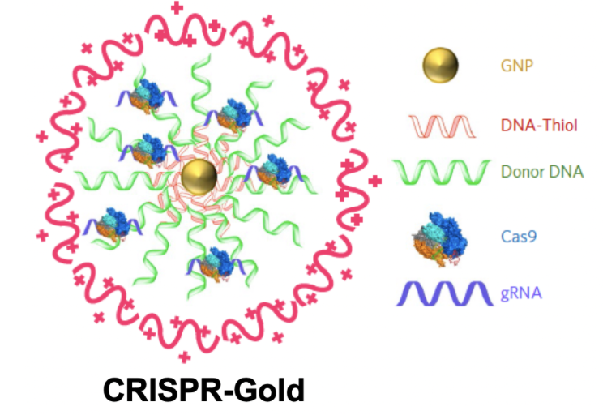

GenEdit Research Intern
Prof. Niren Murthy Lab, UC Berkeley
GenEdit is a startup founded out of UC Berkeley's drug delivery Prof. Niren Murthy that focuses on solving 2 main problems with the current viral gene editing delivery approach: permanent off-site targeting effects and packaging of all CRISPR components. As an intern I performed transcardial perfusions on the mice in order to test efficiency of delivery vehicles and learned chemical formulation of the polymers that encompass the packaging system.
Click on the nanoparticle to be delivered to the GenEdit site!
